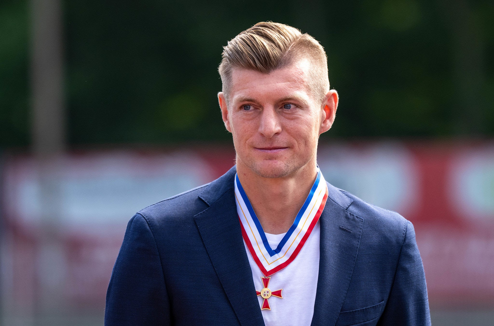
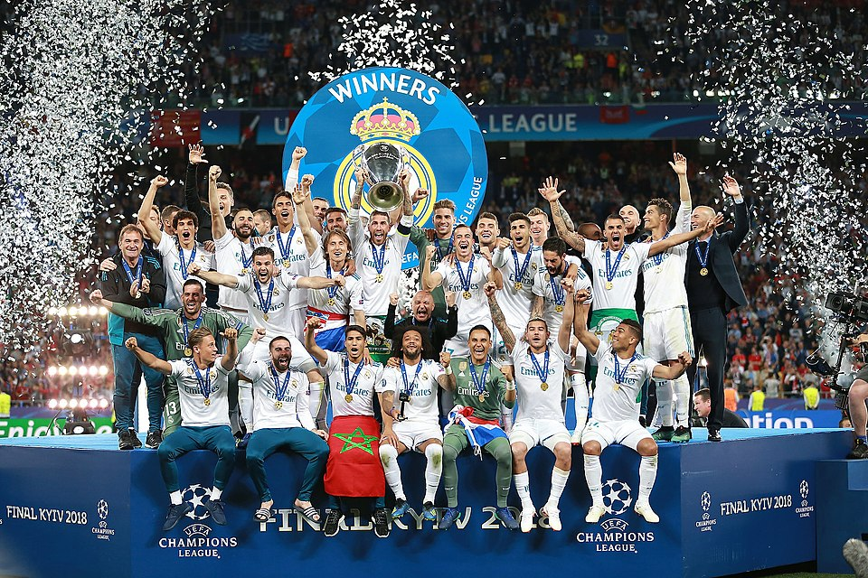

Hello Word
ชื่อพาทิศ ลดาพงษ์พัฒนา
ชื่อเล่นวิน
จากสาขาเทคโนโลยีสารสนเทศ(DIT) คณะวิศวกรรมศาสตร์และเทคโนโลยี (ET) จาก PIM
กำลังศึกษาอยู่ชั้นปีที่ 2 กลุ่มเรียน 1.2-1
อาหารที่ชอบ
- อาหารไทย : ผัดซีอิ๊ว , ต้มยำกุ้ง ,ส้มตำ, คอหมูย่าง
- อาหารญี่ปุ่น : ซูชิ , ราเมน , ข้าวด้งทุกชนิด
- ก๋วยเตี๋ยว : ก๋วยเตี๋ยวเรือ , ก๋วยเตี๋ยวไก่ , ก๋วยเตี๋ยวหมู
- ข้าว
ลำดับ
- อาหารไทย : ผัดซีอิ๊ว , ต้มยำกุ้ง ,ส้มตำ, คอหมูย่าง
- อาหารญี่ปุ่น : ซูชิ , ราเมน , ข้าวด้งทุกชนิด
- ก๋วยเตี๋ยว : ก๋วยเตี๋ยวเรือ , ก๋วยเตี๋ยวไก่ , ก๋วยเตี๋ยวหมู
- ข้าว
เหตุผลที่อยากเรียน Full stack web development
- เพื่อพัฒนาทักษะการเขียนโปรแกรมทั้งด้าน Frontend และ Backend
- เพื่อเพิ่มโอกาสในการทำงานในสายงานที่เกี่ยวข้องกับการพัฒนาเว็บ
- เพื่อเรียนรู้เทคโนโลยีใหม่ ๆ ที่เกี่ยวข้องกับการพัฒนาเว็บ
- เพื่อสร้างโปรเจคต์เว็บของตัวเองในอนาคต
ความคาดหวังต่อวิชานี้
หวังว่าจะได้เรียนรู้เทคโนโลยีและเครื่องมือต่าง ๆ ที่ใช้ในการพัฒนาเว็บอย่างครบถ้วน
หวังว่าจะได้ฝึกฝนทักษะการเขียนโปรแกรมและการแก้ไขปัญหาที่เกี่ยวข้องกับการพัฒนาเว็บ
หวังว่าจะได้สร้างโปรเจคต์เว็บที่มีประโยชน์และน่าสนใจ
หวังว่าจะได้ทำงานร่วมกับเพื่อนร่วมชั้นในการทำโปรเจคต์ต่าง ๆ
อะไรจุดอ่อน ที่ตนเองต้องพัฒนาเกี่ยวกับทักษะ Programming และ แนวทางการพัฒนา
- จุดอ่อน: ขาดประสบการณ์ในการเขียนโปรแกรมและการพัฒนาเว็บ
- แนวทางการพัฒนา: ฝึกฝนการเขียนโปรแกรมอย่างสม่ำเสมอ และทำโปรเจคต์เล็ก ๆ เพื่อเพิ่มประสบการณ์
- จุดอ่อน: ขาดความรู้เกี่ยวกับเทคโนโลยีและเครื่องมือต่าง ๆ ที่ใช้ในการพัฒนาเว็บ
- แนวทางการพัฒนา: ศึกษาและเรียนรู้เทคโนโลยีและเครื่องมือต่าง ๆ อย่างต่อเนื่อง
- จุดอ่อน: ขาดทักษะในการแก้ไขปัญหาที่เกี่ยวข้องกับการพัฒนาเว็บ
- แนวทางการพัฒนา: ฝึกฝนการแก้ไขปัญหาโดยการทำโปรเจคต์และเรียนรู้จากข้อผิดพลาด

< a href="https://en.wikipedia.org/wiki/2017–18_Real_Madrid_CF_season">Real Madrid
Hello hgiyuougtyteiuoit4t
kjhiojpo[o]
ติดต่อได้ที่ | กลับไปด้านบน | PIM